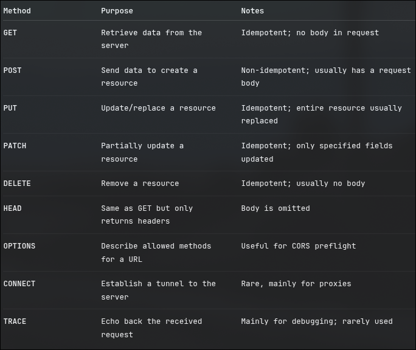

nodmeon is used to restart the server
npm i express for the latest stable version.
Express is a better alternative of http since http
- Cannot serve static files
- Minimal security
- Cutsom
get post req handlers
There are http requests that show the way things are requested for or
requested of.

We init an express app by
const app = express()
We can then use the app as
app.get("/",(req,res)=%gt;{})
inside which you could actually use
req.params
req.query
To get those params and query that are given at the end point.
for ex:
app.get("/futurediary/blogs/:monday?mode=dark",(req,res)=>{
console.log("Requested for",req.params);
consoel.log("Requested with",req.query)
})
you can serve static files in express using
app.use(express.static('static-dir'))
You can also club various end points like -
app.get("/futurediary/blogs/:monday?mode=dark",(req,res)=>{
console.log("Requested for",req.params);
consoel.log("Requested with",req.query)
}).post("/futurediary/blogs/:monday?mode=dark",(req,res)=>{
console.log("Requested for",req.params);
consoel.log("Requested with",req.query)
})
EMethods
- [ ] try installing and actaully using express
- [ ] test GET POST
- [ ] hoppscotch
- [x] router
- [ ] express() , express.Static , express.Router()